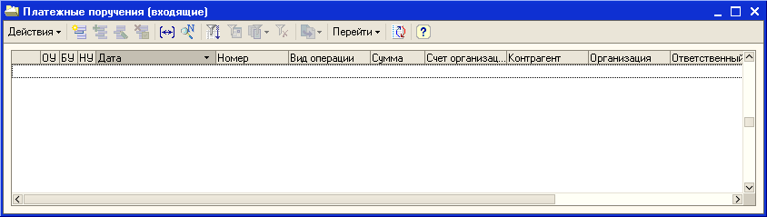
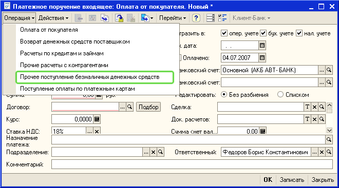
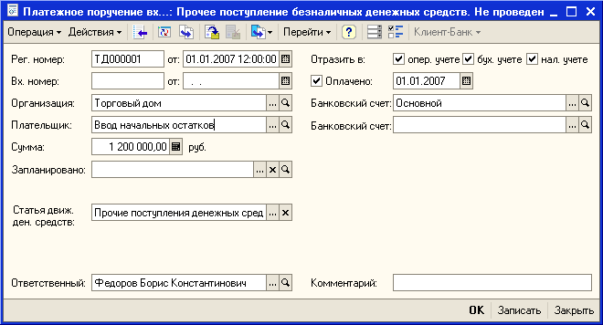
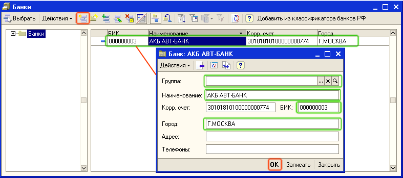
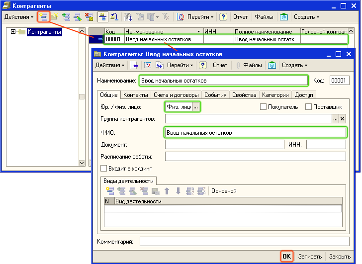
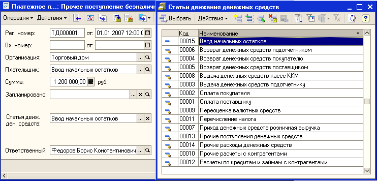
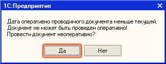

Информация об остатках денежных средств вводится для каждого расчетного счета, которые зарегистрированы для организаций торгового предприятия.
1. Откройте список документов Платежные поручения (входящие). Для этого в меню Документы выберите пункт меню Денежные средства - Банк - Платежные поручения входящие.

2. Откройте форму нового документа для ввода остатков денежных средств на расчетном счете. Для этого нажмите кнопку  или выберите меню Действия — Добавить в командной панели формы списка. Для добавления нового элемента можно также использовать кнопку INS на клавиатуре.
или выберите меню Действия — Добавить в командной панели формы списка. Для добавления нового элемента можно также использовать кнопку INS на клавиатуре.
3. В диалоговом окне формы документа нажмите на кнопку Операция и выберите вид операции Прочее поступление безналичных денежных средств.

После выбора вида операции диалоговое окно формы документа изменится. Заполните реквизиты документа, так как это показано на рисунке.

В документе имеется две даты: дата оформления документа (поле от:) и даты оплаты (поле Оплачено). Остатки денежных средств должны вводится до момента начала работы с системой. Обычно остатки вводятся датой начала месяца или датой начала года.
В качестве организации выберите ту организацию торгового предприятия, на расчетном счете которой фиксируется остаток денежных средств.
Для заполнения реквизита Банковский счет (для организации ЗАО "Торговый дом") добавьте новый расчетный счет в список банковских счетов организации. Для этого в поле Банковский счет документа нажмите на кнопку выбора  , откроется список Банковские счета. Добавьте новый счет нажатием кнопки Добавить (или нажмите клавишу Insert или выберите меню Действия — Добавить). Заполните в форме Банковский счет значения реквизитов так, как показано на рисунке:
, откроется список Банковские счета. Добавьте новый счет нажатием кнопки Добавить (или нажмите клавишу Insert или выберите меню Действия — Добавить). Заполните в форме Банковский счет значения реквизитов так, как показано на рисунке:

Для заполнения реквизита Банк нажмите на кнопку выбора  , откроется список банков. Добавьте новый банк АКБ
, откроется список банков. Добавьте новый банк АКБ

Сумма остатков денежных средств на расчетном счете вводится в той валюте, которая определена для расчетного счета. В нашем случае валюта счета -рубли, поэтому вводится сумма в рублях.
В качестве плательщика следует ввести фиктивного контрагента - Ввод начальных остатков.
Для заполнения реквизита Плательщик добавьте фиктивного контрагента в справочник Контрагенты.
Для этого в поле Плательщик документа нажмите на кнопку выбора  , откроется список Контрагенты. Добавьте нового фиктивного контрагента нажатием кнопки Добавить (или нажмите клавишу Insert или выберите меню Действия — Добавить). Заполните в форме Контрагент значения реквизитов так, как показано на рисунке:
, откроется список Контрагенты. Добавьте нового фиктивного контрагента нажатием кнопки Добавить (или нажмите клавишу Insert или выберите меню Действия — Добавить). Заполните в форме Контрагент значения реквизитов так, как показано на рисунке:

Нажмите на кнопку ОК. Информация будет зарегистрирована в справочнике Контрагенты. Для выбора контрагента в качестве Плательщика нажмите в панели управления на кнопку Выбрать.
Статья движения денежных средств по умолчанию заполняется в соответствии с выбранным видом операции в платежном поручении (Прочие поступления денежных средств). Можно изменить статью движения денежных средств, выделив ввод начальных остатков в отдельную статью движения денежных средств.
Для этого в поле Статья Движ.ден.средств документа нажмите на кнопку выбора  , откроется список Статьи движения денежных средств . Добавьте новую статью движения денежных средств с помощью кнопки Добавить (или нажмите клавишу Insert или выберите меню Действия — Добавить).
, откроется список Статьи движения денежных средств . Добавьте новую статью движения денежных средств с помощью кнопки Добавить (или нажмите клавишу Insert или выберите меню Действия — Добавить).

После заполнения всех реквизитов, нажмите на кнопку ОК и проведите документ. Поскольку документ проводится более ранней датой, то документ проводится в неоперативном режиме. При проведении документа будет выдано соответствующее сообщение.

Нажмите на кнопку ДА и проведите документ.
Следующий раздел: «Ввод остатков денежных средств в кассах торгового предприятия»